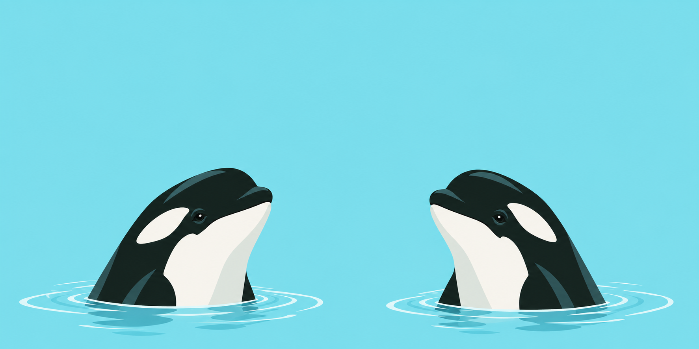
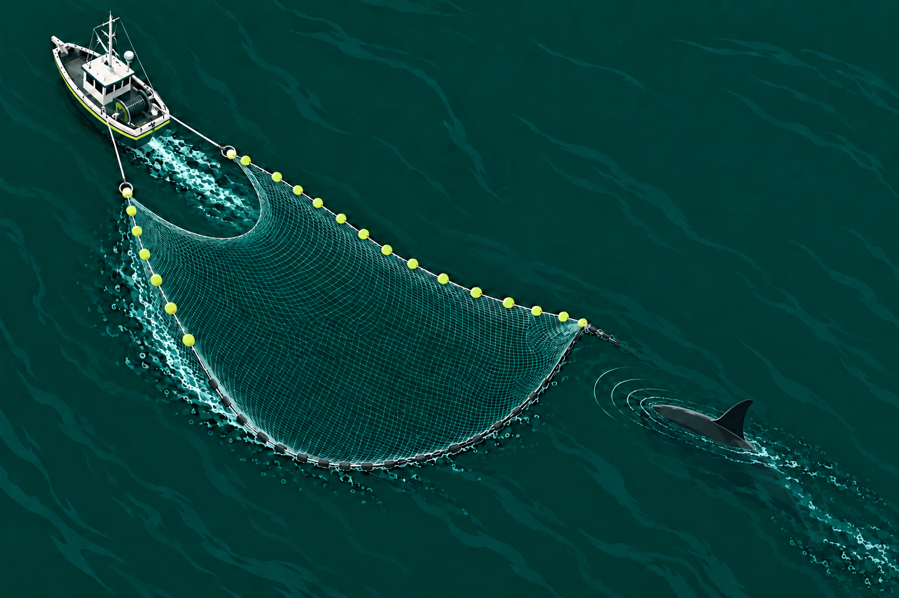
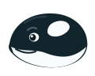

Forest green capOne size · Qty 1$48.00
Cart total$48.00
No items in this visitor’s cart.
Chat with your visitors. Let Orky, your AI agent, help when you’re busy.
Start with one website, iOS app, web app, ecommerce store or SaaS. Add more whenever you’re ready.
@Theo Amy is new here. Let’s help her get started.
Write a reply… / for saved replies
They borrow our chargers.
We borrow their brutally honest feedback.
Great with tomatoes.
No patience for complicated software.
One website and a question to answer?
You’re our kind of person.
Great at working together. Smart enough to rest.
We thought live chat could learn a thing or two.
Orcas stick with their pod. Yours starts with you + Orky. Add people and projects when you’re ready.
Your own little podOrcas rest half their brain at a time. With Orka, you can switch off completely. Your AI keeps helping customers.
Meet your night shift
Every pod has its own calls. In Orka, visitors speak their language and you speak yours. The original and translation stay together, right in the chat.
All oceans. One conversation.Orcas use echoes to understand what’s around them. You see a visitor’s page, details and live typing.
A little context goes a long way.Orcas learn from their pod. Give your customers a help center, and let Orky learn from those articles, your website and FAQs. Helpful answers, with or without a chat.
Your help center. Your helpful teammate.
calories.example/food-log
IP · 192.0.2.18caps.example/green-cap
IP · 198.51.100.24inrank.example/editor
IP · 203.0.113.7See who’s on your sites, where they’re visiting from, and the page they’re on. Country, IP and activity, all in one place.
Read about orca families and learning, how they rest, their calls, and echolocation.
You choose which projects each teammate can access. Keep everything separate. See all your conversations together, or filter to just one.
You’re in control.Unlimited projects on every plan. Yes, even the free one. Go on, buy that domain.

Ready when you’re busy, asleep, or taking a break. Orky learns your business, so the answers sound like you.
Get a suggested answer. Edit it if you like. Send it when you’re happy.
Nothing is sent without you.Edit a word. Change the tone. The send button is yours.
Busy or away? Let Orky answer. It asks for a human when it needs help.
You can take over at any time.You can return an unworn cap within 30 days. I can help you find the returns form.
Sent to visitor · From your returns FAQ ✓✓This return is outside your policy. Orky leaves the decision to your team.
A hello, a goodbye, even a little weather chat. Pick a shortcut, review the draft, and send.
Your draft stays private.That worked, thank you!
Wrap up warmly and remind them they can come back for help.
Example for JessyCreates a draft. You review and send as Charles.You’re very welcome, Jessy! If anything else comes up with your bookings, we’re right here. Have a lovely day!
Turn Orky on or off for each conversation. You’re in control.
See their page, their details, and even the message they’re still typing. Less asking. More helping.
See who’s here, where they are, and what they’re looking at. Across one website or your whole pod.
No items in this visitor’s cart.
Example deep link: admin.caps.example/customers/alex
See their message while they write it. Be ready when they hit send.
They write in their language. You reply in yours.
A quick question or an all-hands situation? Spot the urgency in your inbox and give each conversation the attention it needs.
They smell blood?Checkout is down on mobile.
My cap storeCan I save a meal to log it again?
My calorie trackerLove the new update.
TRUSTARRTry a level. See it in the inbox.
You have a bedtime, days off, and sometimes an emergency. Let visitors know when you’ll be back. They’re human, too.
Your online or away status and average response time set the expectation, too. Being reachable doesn't mean being available every minute.
Your team, your colors, your words. And a costume when the occasion calls for it. Try one below.

Small corner.
Big welcome.
Everything you need to help your customers, all in one place. Browse the highlights or open any feature for the details.
Files, quick replies and every message in one place.
Chat with visitors in real time. See what they are typing before they send, so you can understand the question sooner.
Pick up the whole story and find past messages by keyword. Message search is included in Pod and Fleet.
Give your most useful answers a shortcut. Less retyping, more time for the conversations that need you.
Share the files and screenshots that make an explanation click. Images in chat are included in Pod and Fleet.
A little personality, right in your composer. Sometimes a friendly smile does the job.
Know when a message has been read, so you have a clearer picture of the conversation.
When a visitor leaves your site, the conversation can continue by email.
Assign a chat, leave a note, and pick up where they left off.
Write a reply…
Send ↑Every project in one unified workspace and one subscription. No switching accounts to find the next conversation.
Give each conversation a clear owner. The right teammate can pick it up with the context they need.
Leave internal notes and bring teammates into the loop with mentions. Your visitors only see the conversation meant for them.
Keep conversations organized with tags that make sense for your business.
Focus your inbox by project, conversation status, assigned agent, or tags.
Close the loop and keep finished conversations out of the way without losing their history.
Set a reminder to return to a conversation. Follow-ups should not depend on remembering an open tab.
Low, Normal, High, or Critical. One, two, or three sharks make each conversation's urgency visible in the inbox and inside the chat.
Helpful answers from your own knowledge.
Train Orky on your website, documentation, and FAQs. Answers grounded in your business, without a generic script tree.
Let Orky answer automatically when you are offline. When he cannot help, he hands the conversation to a human.
Ask Orky for a draft. Review it, edit it, send it, or leave it. Suggestions are never sent automatically.
Step into an AI conversation in real time whenever your own touch is needed.
Turn Enable AI on or off for a specific conversation. Decide where Orky helps, without a global all-or-nothing setting.
See the visitor’s original message, detected language and English translation together. Your replies appear in their language, with your original text underneath.
Say Hi, Say Bye, Chit Chat, Weather, AI Answer, and Summarize put a little help right beside your reply.
Get the essentials of a conversation in one click. Catch up before taking over or handing it to a teammate.
Let people know when you’re available.
Let visitors know whether a person is available before they start a conversation.
Keep unwanted traffic out of your chat with controls for specific IP addresses and countries.
When a real-life emergency needs your attention, let visitors know that your response will take longer.
Set your unavailable hours and show a night banner with your team's local time, or a break day banner when you are taking time off. Be clear about when you will reply.
Display your average response time in the widget. Set an honest expectation instead of promising instant human support.
Add it in minutes. Reply from your desk or your phone.
A little business.
A warm welcome.
Can you help with my order?
Of course. What do you need? 👋Send a message…Can you help with my order?
Of course. What do you need? 👋Read ✓✓
Add the chat widget to Shopify, WordPress, Webflow, SaaS products, landing pages, and other websites.
Reply to customers from your phone. iOS and Android apps are included on every plan, even Free.
Customize the widget's colors and text to give visitors a welcome that feels like your brand.
Keep your website feeling fast with a chat widget designed to stay lightweight.
Set up Orka without technical expertise. An SDK is available when you want to build a custom integration.
Give your widget a seasonal touch. Serious about support does not have to mean serious all the time.
Start on your own. Add people when you’re ready.
One person. Every project. A simple way to start.
Start trial for freeOrka branding included.
All the tools. Three teammates. One calm inbox.
Start trial for freeOrka branding included.
More people, the same simple setup. Fully your brand.
Start trial for freeYour name. Your colors. Your widget.
AI usage is separate from your plan. Choose how to pay below.
Available on every plan, including Free.
I'm the co-founder of Orka, and you might be wondering why we decided to create a live chat in a highly competitive market with already incredible solutions.
Actually, we initially developed Orka for ourselves because we needed features that weren't available from the big players in the market, like Crisp, Intercom, or Tidio. We run SaaS products and online businesses of our own. It was both a nightmare and costly to constantly switch between projects.
Moreover, receiving messages at 11 PM and feeling obliged to respond was starting to impact my mental health. So, we created a live chat that not only reminds people that I'm only human, but also allows AI to take over if I'm busy.
Like walking my dog.
Or enjoying a beer.
Or sleeping.
Yes, people request urgent fixes at 3 AM because it's 6 PM for them. I know I'm not the only person who has woken up in the middle of the night to fix things in order to avoid a one-star review. What a world.
And now, you can use this tool too.
There's even a free plan if you want to give it a shot :)
One project is all it takes. Your pod starts here.
Start trial for free Then go do something wonderfully offline.